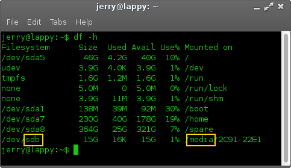
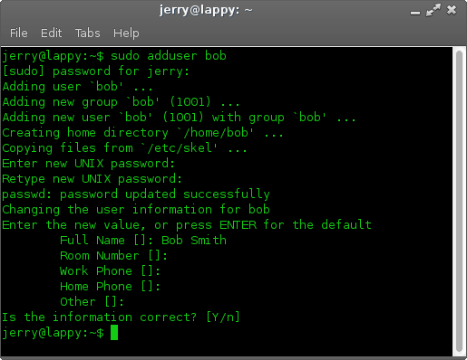

Linux Lite Installation Guide
Installing Linux Lite to your hard drive
Adding another User in the future
Removing a User
Writing the Linux Lite ISO to a DVD
Here is some free DVD burning software for you to select from:
BurnAware Free - http://www.burnaware.com
CDBurnerXP - http://cdburnerxp.se/
ImgBurn - http://www.imgburn.com/
Place a blank DVD in your DVD drive, open up the program, select the iso file that you want to burn. Choose the lowest burn speed, this will greatly reduce the risk of your burn becoming corrupt as can sometimes happen. A 4x speed is recommended if you have it.
Writing the Linux Lite ISO to USB using software
Unetbootin:
UNetbootin allows you to create bootable Live USB drives. Unetbootin is available for Windows, Mac and Linux.
Download and
follow instructions from here -
http://unetbootin.sourceforge.net/
Writing the Linux Lite ISO to USB using a terminal in Linux
To find out the letter of your usb stick, open a terminal and type:
df -h It is usually
listed as 'media' or similar.
Be very careful to make sure you choose the right drive letter,
as you can see in the Filesystem column, my device is
sdb another clue is the value in the Size column, here it
is shown as 15G. In this example my device is an Apacer
15gb USB stick.

Open a folder and make sure you are in the directory that the
iso file is in. Open a terminal in that directory and type the following:
| sudo dd if=linux-lite-1.0.6-alpha-preview-32bit.iso of=/dev/sdx bs=4M |
where 'x' is the letter of your usb device.
The Live DVD/USB image will boot into the desktop automatically,
there is no need to login manually.
If you need the sudo password, it is: linuxlite
Installing Linux Lite to your hard drive
Now that you've had a look around Linux Lite, we're ready to install it to your hard drive.
The first step is to double click on the Install Linux Lite icon on your Desktop.
pic-here
To be written.
To add another user, open up a Terminal and type in the following:
| sudo adduser name |
where name is the name of your new user. The only details
you will need to enter is:
your sudo password
Enter new UNIX password:
Retype new UNIX password:
All the other details are voluntary and not necessary.
Is the information correct? [Y/] (press enter if they are correct)

| NOTE: If you have already enabled auto login for another user, you will need to disable it so that your new user can login. If you don't want to disable auto login for yourself, you can click on 'Menu, Lock Screen' choose 'New Login' from the locked screen and the newly created user can then login. Only one user can have auto login enabled at a time. |
To remove a user, open up a Terminal and type in the following:
| sudo userdel name |
enter your sudo password and where name is the name of
the user you want to remove.
If you want to remove their home directory as well (make sure you
backup any files you want to save first)
| sudo userdel -r name if you get a message saying they are still logged in, try: sudo userdel -r -f name |
enter your sudo password and replace name with the name of
the user you want to remove.